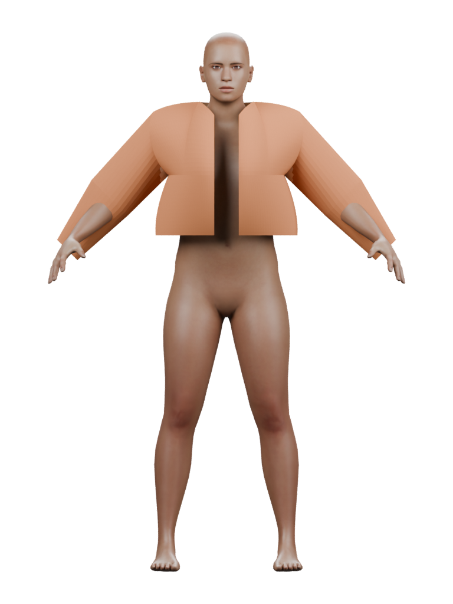
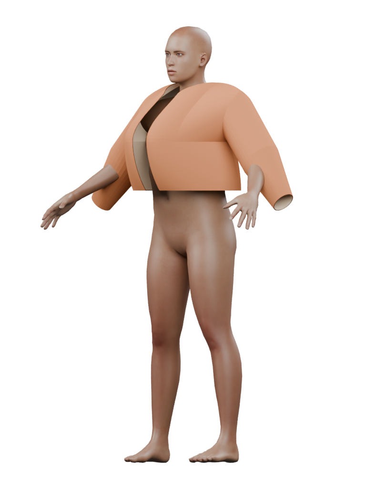
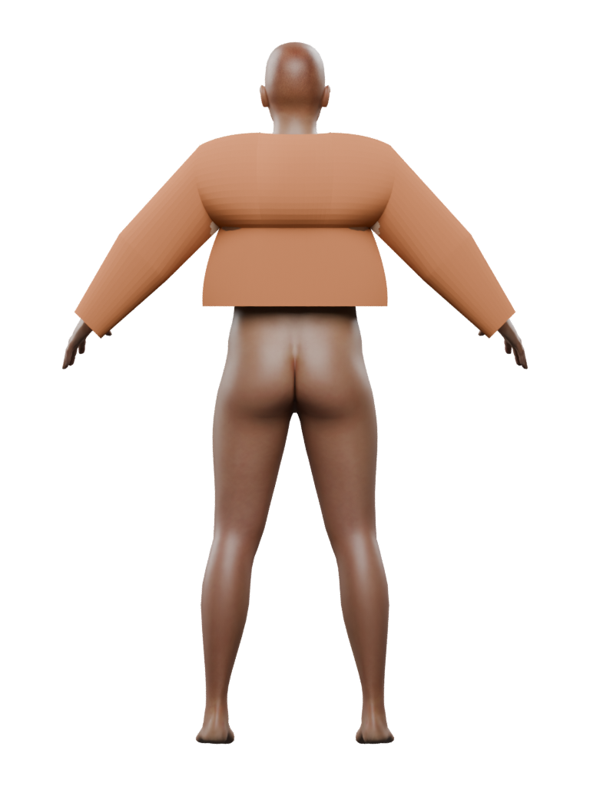

Ari — first main-panel diagnostic
Fit refused · unfinished main panels
The unchanged jacket crosses Ari’s body. These first renders show the prototype’s shape; they do not qualify it as wearable clothing.
The open, cropped outer layer is readable. The shoulders and upper back bulge, the transition to the lower panels is abrupt, and skin shows through parts of the sleeves. This shape is rejected; the images are retained as construction references.
Front

Fit refused. Opening readable; upper-to-lower transition and sleeve presentation unresolved.Oblique

Fit refused. Boxy lower panels and flared sleeve end. Pale lining is visible; its separation is unqualified.Rear

Fit refused. Rounded upper back and abrupt horizontal break. Certified back/body crossing remains.Collar, zipper, facings, pockets, cuffs and gathered hem are still unfinished. Ari’s body form, face, skin and curls also remain prototypes. The next responsibility is a separately owned body-and-arm placement contract; this fixed shape will not be tuned further.
Original design references
 Original bomber sheet: design vocabulary, not a metric pattern or fit proof.
Original bomber sheet: design vocabulary, not a metric pattern or fit proof. Original character direction. Different pose, expression and lighting; no measured anatomy transfer.
Original character direction. Different pose, expression and lighting; no measured anatomy transfer.Preserved bare-body control
 Same saved actor, earlier frame. Camera target/scale differ from this common three-view frame; no pixel-equivalence claim.
Same saved actor, earlier frame. Camera target/scale differ from this common three-view frame; no pixel-equivalence claim.